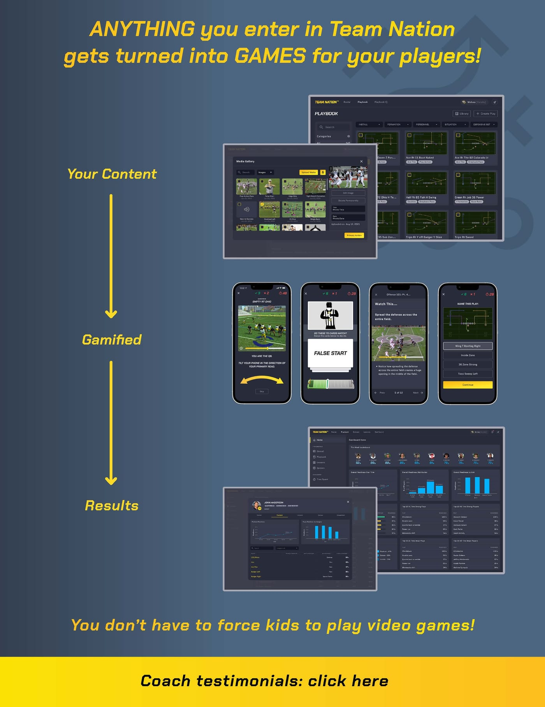
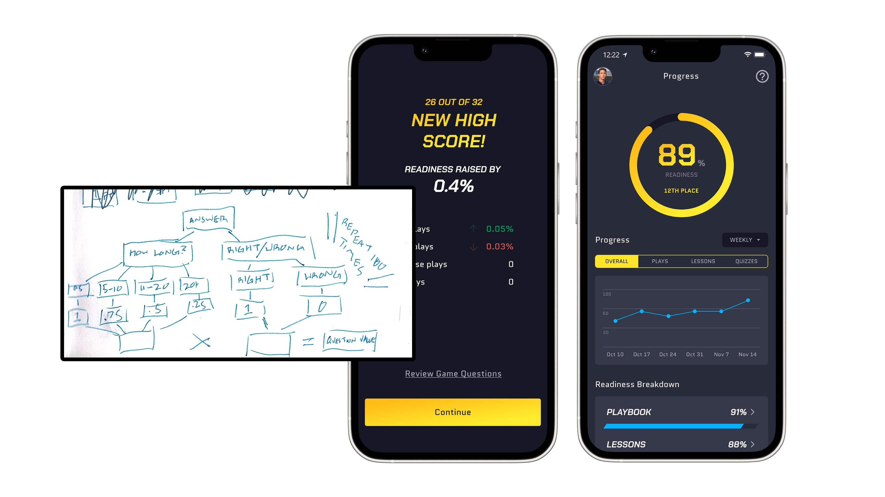
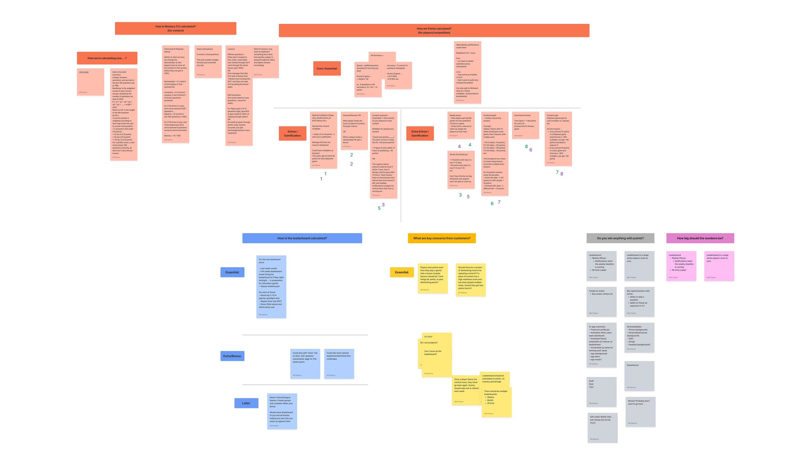
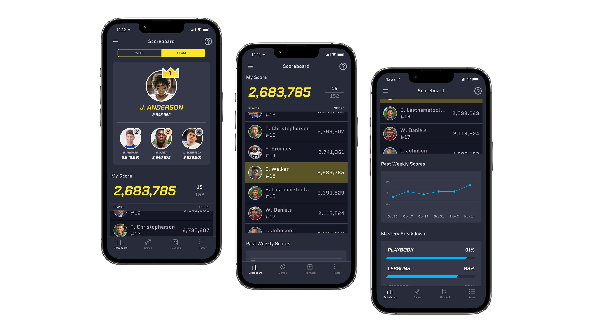

Team Nation Sports
Team Nation Scoring
Fixing a scoring system that punished players for playing on a learning games platform.
As the designer and PM on this 0-to-1 platform, I diagnosed a drop in engagement as a motivation problem, not a lack of interest, and readjusted the way players were scored to incentivize continued play.
Games played per team climbed when a team first joined, then plateaued, then fell off. Upon investigation, coaches and players told us the way scores were calculated felt like a punishment for continuing to play.
The Player Readiness Score was working exactly as designed — a fluctuating read on current skill, not a number that kept climbing. So the issue was that we were missing a sense of growth, not that the scoring algorithm was broken.
I added a separate, cumulative points system and left the Player Readiness Score alone. Engagement skyrocketed, with games played by top-performing players up 3x; across the whole player base, 1.5x.

Context
Team Nation teaches athletes their playbooks through gamification: coaches upload their playbooks and other content, players drill it by playing learning games, and everyone's performance lands on a leaderboard.
The core metric was the Player Readiness Score, which was based on a player's performance in learning games. Readiness was calculated from how many questions a player got right and how quickly they answered when they played a game. The intent was that as players continued to practice, their score would reflect their current level of competency, or "Readiness."

Problem
The same story replayed each time we onboarded a team to our beta: games played per team climbed when a team first joined, then plateaued, then dropped off. When we asked coaches and players why, the answer was consistent — they felt punished for continuing to play. Readiness was an average, so a player who'd built up a high score could play another game, do fine, and still watch their score tick down. Once players caught on, the smart move was to stop playing the moment their score looked good. The leaderboard made it worse: with a 100% ceiling, the top players bunched into what looked like ten-way ties, which flattened any sense of competition.

The reasoning
Readiness isn't supposed to only go up. It's a proxy for how well someone knows the material right now, and like any skill, that should slip when you stop practicing and climb when you keep at it. An average that can fall is doing exactly what a measure of current competency should do. The way Readiness was calculated and behaved was correct, it just wasn't the right thing to push players to chase. In fact, as part of this change, I added a decay to the Readiness calculation to better reflect the natural decline in skills when not practiced.
Rather than rework the Readiness Score, I added a second number beside it: points, earned every game, that only ever go up. This way, even if a player's Readiness score fluctuates, they can still see their progress and feel rewarded for their effort.

Design
I rebuilt the mobile leaderboard around points instead of Readiness, giving the top four spots visual emphasis to sharpen the competition at the top of a team. I also added graphs and other visualizations to help players see their performance over time.

Outcome
After launch, games played by top-performing players went up 3x. Across the full player base, games played rose 1.5x. The drop-off we'd watched hit teams as they plateaued stopped following the same curve — the number that had been discouraging play was no longer the one in front of players.
Building on this
With more time, I'd give coaches direct control over the incentive layer, not just visibility into it. Right now points reward playing games generically, but coaches know their content better than any formula does. Letting them weight specific content or periodically reset scores to reopen the leaderboard for players who'd fallen behind would turn points into a coaching tool rather than just a player-facing motivator.